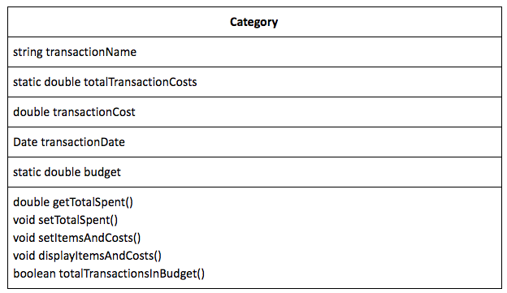
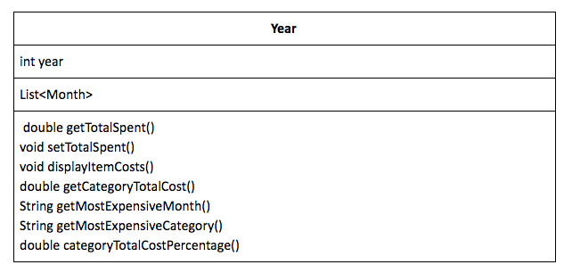
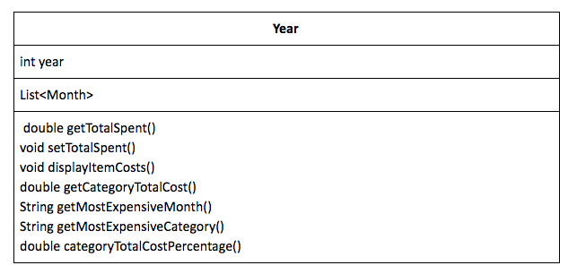

06/11/2020 • Expense Tracker Design
One of the first lessons I learned in Introduction to Computer Science was to create a design before starting to code.
Goal
A program that takes in CSV files and displays the amount of money spent on specific categories either by the month or year.
What it needs to do:
- Take in CSV files and parse out the name of what was bought, the date, and the cost.
- Identify the category that the item belongs to, and add the cost & name to the category.
- Add the cost & name to the associated month.
The Objects

 

Relationships between objects:
- Year has a Month
- Month has a Category
- Categories (subclass) are a Category (parent class)
- Categories (the subclasses) include: Groceries, Pet, Home improvement, Entertainment, Bills, Eating out, 1x Expenses, Donations, Material.
- All contain the same variables and methods as their parent class (Category).
The Design Pattern
Design patterns improve the quality of code by helping the outside viewer understand it. Deciding between patterns was harder than expected. Below are the 2 patterns I debated:
Singleton - Initially, I thought of making this project into a bank account. A single class was going to be created, a “bank” object, and the transactions were going to instantiate a new category instance which would have been added to the month object all added to the bank object. This was abandoned because there was no need for a bank object.
Factory - I decided on this method because there is a category with categories subclasses that need to be called. The interface calls the correct category of the transaction and the object is created. The category object will then be added to a month object, and the month object will be added to the year object. This will also allow a static variable to be used between each instantiated object of a category preventing the need to go through and add the costs of all the category transactions.
Now it's time to code.
06/02/2020 • Guinea Pig Facts Part 1
Envisioned code stack: React frontend, Spring Boot backend, MongoDB database.
Recently, I finished a fullstack project called “Oregon COVID-19 Tracker.” That experience has taught me the importance of design, the ability to adapt when a feature isn’t working as intended, and the need to structure the project in the way it is intended to be deployed. For this project using the new skills obtained from the last, I have decided to create another fullstack web application but this time using an opinionated backend with a model-view-controller architecture and enabling user authentication. This is the primary design and will be changed as progress is made and blockings are found.
User Flow
User goes to landing page '/' → landing page displays all guinea pig facts that have been submitted to the MongoDB database as a table → user can navigate to signup OR login → User now has the ability to add a new fact once logged in
Models
{
"userName": "dummy",
"password": "password",
"role": {
"role" : "readWrite",
"db": "facts"
},
"contact": {
"email": "dummy@mail.com",
"dailyUpdate": "false"
},
"factId": [1, 200, 5]
}
- users
- userName: Unique, string, required
- password: String, required, at least 8 characters
- role
- read/write privileges only available for fact collection. Cannot remove facts.
- contact
- email: String, required
- dailyUpdate: Boolean, required
- facts
{
"factId": 1,
"factValue": "Guinea Pig babies are called pups.",
"dateCreated": "06/02/2020",
"approved": false
}
- fact
- factId: Unique key
- factValue: String
- dateCreated: Date, default is day fact is submitted
- approved: Boolean, default is false
Routing
Frontend
- /
- Landing page. Displays all guinea pig facts in a table with fact string and date created.
- /login
- Form with user name and password fields to allow user to login. Goes through sign in process of controller.
- /signup
- Form with user name, password, email, and daily update fields to allow user to create an account. Goes through signup process of controller.
Backend
- /api/getFacts
- Returns all facts and dates in fact database.
- GET
- /api/createUser
- Adds user to database
- POST
- /api/updateUser
- Allows user to update the password associated with their account.
- PUT
- There will need to be some type of authentication to get to this page.
- /api/addFact
- Allows user to add facts to the fact collection.
- POST
- There will need to be some type of authentication to get to this page.
05/28/2020 • First Post
This blog will be dedicated to discussing projects and general musings regarding the tech world. Hello world!